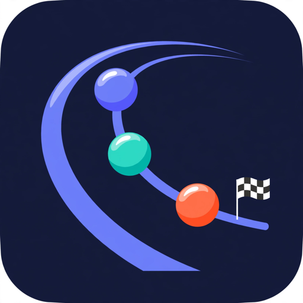
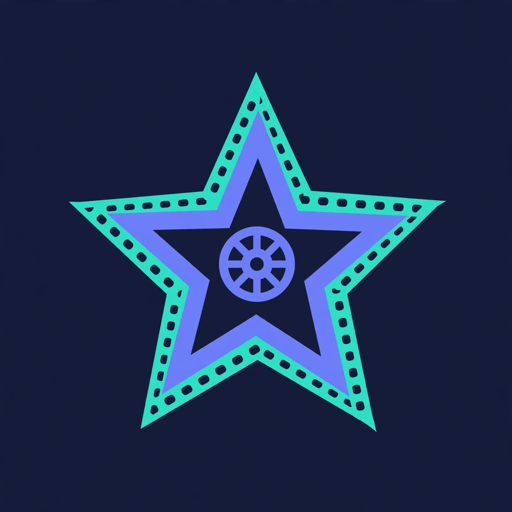

FampanAI is a suite of AI-powered tools that helps creators and online sellers produce videos, images and interactive content at scale — from script writing to a publish-ready file.
Join the waitlist Explore the toolsSeven specialized tools, one goal: automate content production end to end.
Creates complete videos automatically from images and a script: scene timing from SRT files, realistic ambient sound per scene, background music and voiceover assembly.
Core productA browser extension that automates AI image generation on Google Flow: batch prompts, consistent characters, and one-click result collection for video production.
Chrome extensionAnalyzes competing YouTube channels and videos — titles, transcripts, publishing patterns — and turns the data into actionable content strategy.
AnalyticsGenerates interactive quiz and trivia videos with questions, answers, timing and voiceover for education and entertainment channels.
Interactive content
Simulates world marble racing tournaments with physics-based tracks, commentary and tournament brackets for entertainment content.
Entertainment
Assists movie review production: scene extraction, script drafting and review video assembly for film channels.
Review contentManages multiple browser profiles and connections so creators can run large-scale, organized content workflows across accounts and platforms.
InfrastructureClaude API turns raw ideas and sales articles into scene-by-scene scripts with SRT timing, image prompts, titles and hashtags for publishing.
Powered by ClaudeThe flagship pipeline: idea → video in four steps.
An idea, a product description, or your own images and script.
Claude API writes the scene-by-scene script, SRT timings and image prompts.
Images are generated or animated, with realistic ambient sound for each scene.
The final video is rendered with music and timing locked to the script — ready to publish.
Every tool is developed and used in production for our own audience before public release.
Live time in our main markets around the world.
We are opening a limited beta for creators and online sellers. Leave your email to join the waitlist.
Questions, partnerships or beta access — reach us anytime.